Click to learn and see more!
Soccer
Girls
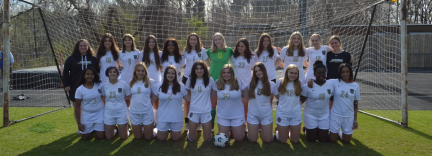
Stats
Record: 7-6-1
Total Goals: 51
Top Scorer: Ava Muller
Captain
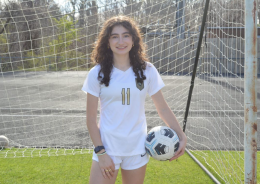
Ava Muller 22'
Soccer is one of our many incredibly fun team sports. The games are normally during the week, and if there is not a game they are down at Lily Field, where practices are held. There is a bus that runs everyday down to Lily Field, so kids that are unable to drive can get down their safely. Soccer is sport that anyone and everyone can pick up quiet easily with the right mindset. Soccer also is a great place to meet people of different ages and grow those special connections on and off the field.
Boys
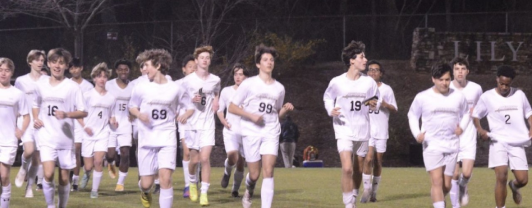
Stats
Record: 7-6-1
Total Goals: 69
Top Scorer: Clayton Hemingway
Captains
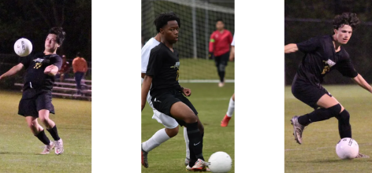
Finn Pak 23' Jaison Perkins 23' Clayton Hemingway 23'
XCTF
Cross Country
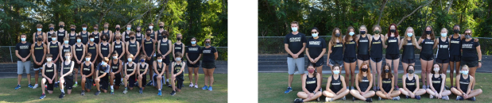
Cross country is a sport that takes place in the fall, the season normally starts around early August and goes early November. Races normally take place on Saturday mornings and are about the length of a 5k. There are practices everyday and races almost every weekend. The girls’ and boys’ cross-country team is very successful and is so much fun to be apart of.
Head Coach
Track and Field
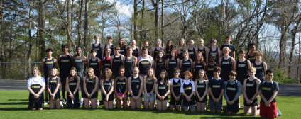
Track and Field is sport for everybody. There are so many different events that test your athletic ability. For Track and Field there are two seasons: indoor and outdoor. Meets normally take place Friday’s and/or Saturdays and are so exciting to participate in or watch. The practices are everyday after school where you get to meet people from all ages and make good connections with your teammates.
Golf
Girls
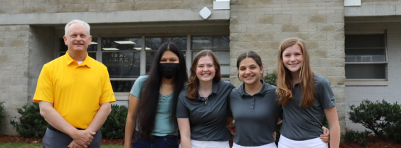
Coach
Golf is another one of Altamont’s beloved sports. They practice nearly everyday at the Highland course which isn’t too far from school. They have such a great team, with the most amazing energy. There is space for people of all ages on the Golf team!
Boys
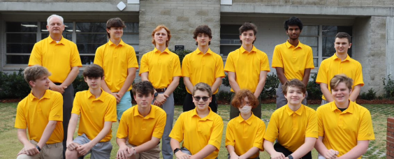
Captain
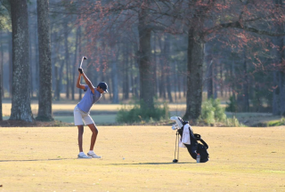
Vinay Yerramsetti 22’
Basketball
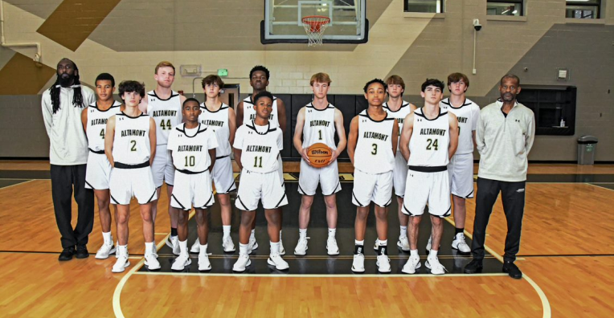
Coaches
Altamont basketball creates such a great environment between the players and the student body. Students always support and have great team spirit for our games, and the turnouts are always incredible. Practices are constructive but also fun where we have the chance to scrimmage. We also participate in other team activities off the court where we create team chemistry. We support other athletics and have the chance to eat and go to other sports games around the city. The basketball teams range from 5th all the way to 12th grade. Altamont basketball creates an exciting collaborative experience that is welcoming to everyone.
Captains
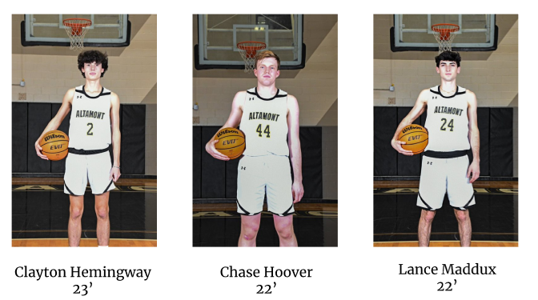
Stats
Record: 3-13
Top Scorer: Chase Hooover
Volleyball
Captains
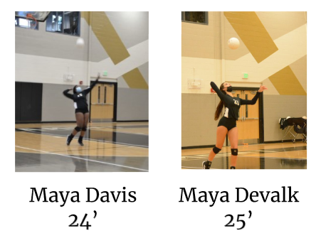
Coach
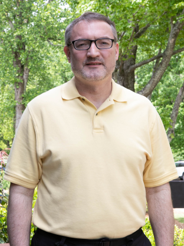
Volleyball has been a well-loved sport at Altamont forever. The season starts during the summer with team workouts, and it is a great time for team bonding as well. Volleyball is the first sports season of the school year, and with games being afterschool students love to come and cheer. It is a great environment for players of all skill levels to have fun and improve. The volleyball team has had lots of success over the years and every season brings another chance to win at state!
Stats
Record: 13 - 9 - 1
MVP: Maya Devalk
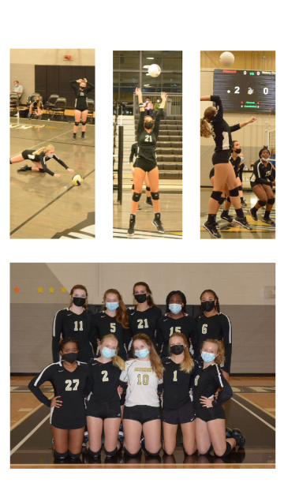
Tennis
Girls
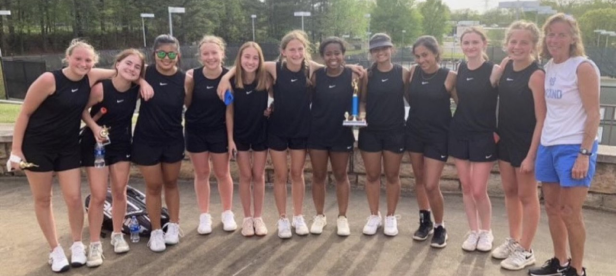
Captain
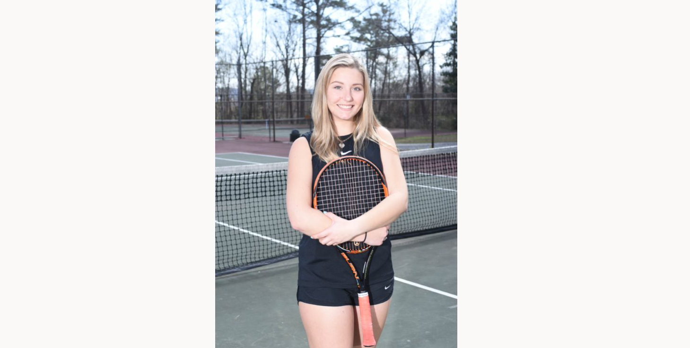
Madeline Stephens 22'
The Tennis teams have been one of Altamont’s most successful teams for years now. The season is from February to April. They practice everyday after school at the tennis courts on campus.
Coach
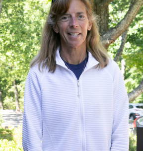
Boys
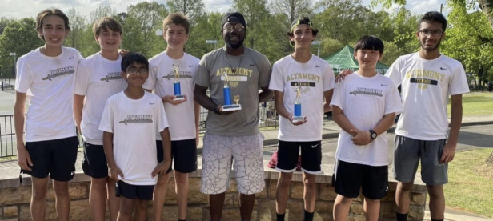
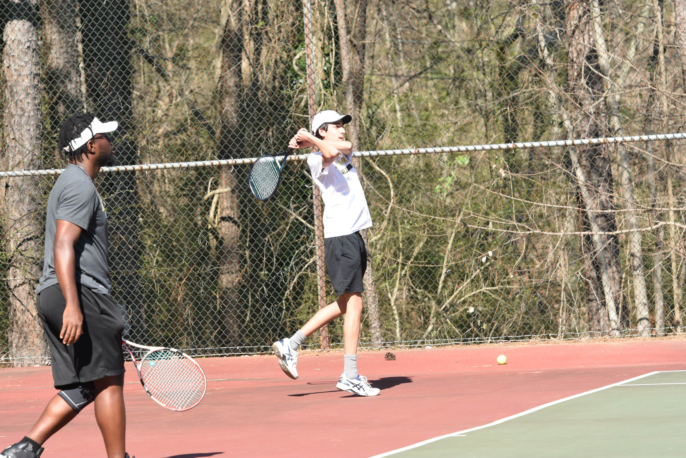
Baseball
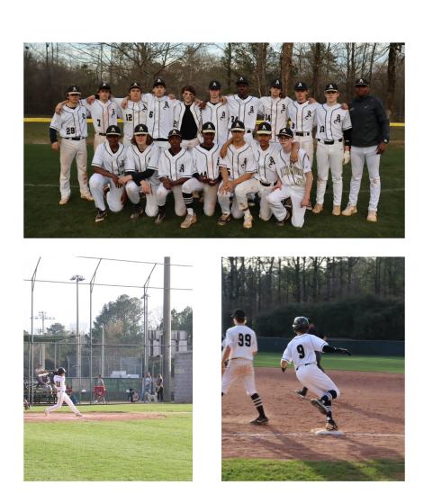
Baseball has been a school favorite for many years. All though the team doesn’t always come out on top, they have fun doing it. Tryouts happen around November and December, and they start training after winter break. Practices are normally after school down at Comer Field. The baseball team is filled tons of hard workers who would love to welcome any new players.
Stats
Record: 8-2
MVP: Malcolm Laney
Captain
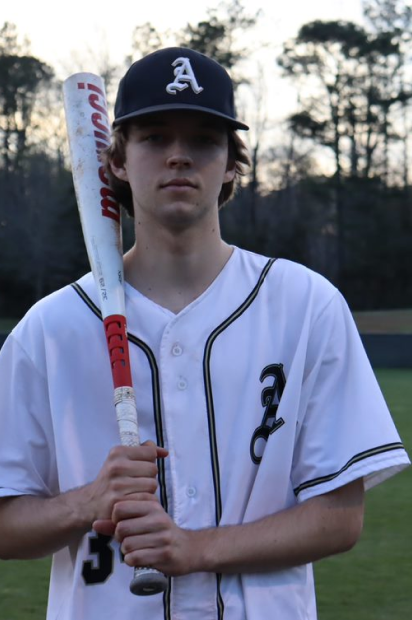
Malcolm Laney 22'